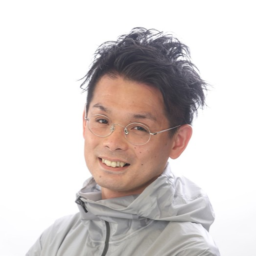
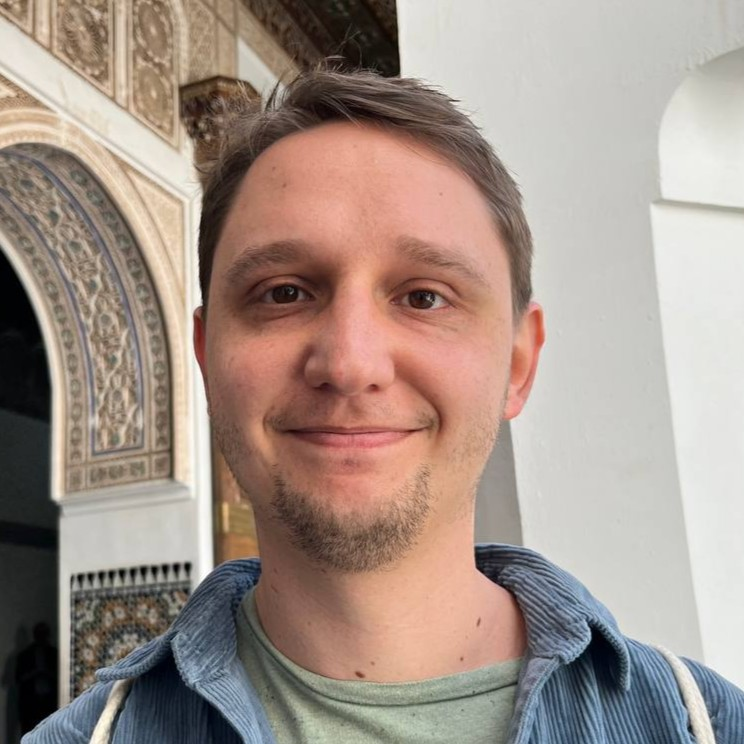
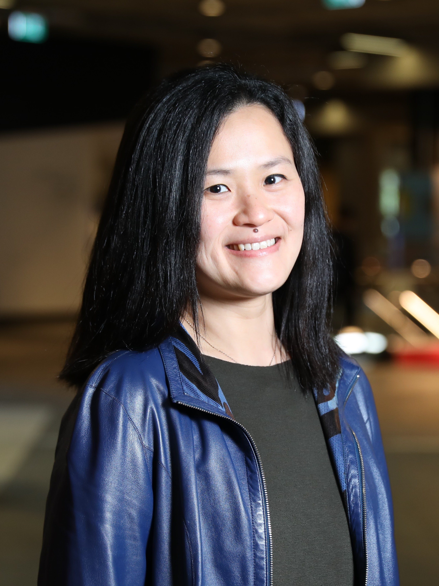

International Workshop on Reality Mediation: Personalized, Shared, and Connected Realities
Ubiquitous Computing is increasingly shaping how people perceive, interpret, and discuss the world around them. This one-day workshop asks how such personalized and mediated experiences can remain intelligible, shareable, and societally grounded.
01 Abstract
Recent advances in AI, XR, multimodal sensing, wearable interfaces, and cyber-physical infrastructures are expanding the role of Ubiquitous Computing from supporting everyday activities to shaping how people perceive, interpret, and discuss about the world around them. These systems can enable accessibility, learning, mobility, collaboration, and public-space interaction at unprecendented personalization levels, but they may also fragment shared understanding, create asymmetries, and raise concerns around manipulation, privacy, safety, accountability, and trust. This workshop introduces reality mediation as a unifying lens for these emerging challenges. It brings together researchers from across UbiComp's contributing disciplines, including but not limited to HCI, XR, AI, urban computing, mobility, cyber-physical systems, and trustworthy computing, to discuss how personalized and mediated experiences can remain intelligible, shareable, and societally grounded. The workshop aims to develop concepts, design principles, evaluation methods, and research questions for future ubiquitous computing systems that are not only adaptive and intelligent, but also supportive of shared understanding, towards ubiquitous technology that increases societal cohesion rather than undermining it.
02 Important Dates
- Submission Deadline
- TBA
- Notification
- TBA
- Camera-Ready Deadline
- TBA
- Workshop
- October 11 or 12, 2026 (TBA)
03 Call for Participation
Ubiquitous computing is no longer only about sensing context and adapting services. As AI, XR, multimodal sensing, wearable and ambient interfaces, and cyber-physical infrastructures become embedded in everyday environments, computational systems increasingly influence what people notice, how situations are interpreted, and how places, services, information, and other people are encountered. A navigation system may foreground some routes, risks, or opportunities over others; an XR interface may reveal invisible layers of a place; a wearable system may infer bodily or emotional states; and an AI-enabled public-space service may personalize which information, communities, or actions become visible to each person.
These developments create major opportunities for accessibility, learning, mobility, collaboration, health, public-space interaction, and civic participation. At the same time, they raise a deeper question for the UbiComp community: when systems personalize and transform everyday experience, how can these experiences remain understandable, shareable, accountable, and trustworthy across different people, devices, places, and intelligent agents?
This workshop introduces reality mediation as a unifying lens for this emerging design space. By reality mediation, we refer to the ways ubiquitous systems sense, model, transform, personalize, share, connect, and govern people's experiences of the world. The workshop aims to move beyond isolated examples of personalization or adaptation and toward a broader discussion of how mediated realities can be designed responsibly: not only to support individuals, but also to preserve common ground, enable negotiation across perspectives, and sustain trustworthy social interaction.
We invite researchers and practitioners from UbiComp, ISWC, HCI, XR, AI, IoT, cyber-physical systems, urban computing, mobility, accessibility, privacy, security, fairness, and trustworthy computing to join this conversation. We welcome technical, conceptual, empirical, critical, and design-oriented contributions, including early-stage work that can stimulate discussion and help shape a shared research agenda.
Topics of Interest
Topics include, but are not limited to:
- theories, concepts, and design frameworks for reality mediation;
- personalized, shared, connected, collaborative, or negotiated realities;
- multimodal sensing and modeling of people, places, activities, bodies, situations, and social contexts;
- XR, wearable, mobile, robotic, and ambient interfaces that mediate everyday perception and action;
- AI agents and foundation-model-based systems that shape interpretation, recommendation, coordination, or decision-making in everyday environments;
- systems that connect individualized perspectives across people, groups, communities, or stakeholders;
- public-space, urban-scale, mobility, transportation, and community systems under personalized mediation;
- digital social prescribing and community referral systems that mediate access to health, well-being, and local support resources;
- accessibility, inclusion, learning, health, well-being, collaboration, and civic participation enabled by mediated experiences;
- explainability, intelligibility, transparency, provenance, and user control in mediated ubiquitous systems;
- privacy-preserving, secure, safe, and accountable architectures for mediation across edge, cloud, federated, and cyber-physical infrastructures;
- fairness, plural values, bystander concerns, governance, policy, and responsible innovation in personalized or mediated realities;
- empirical, in-the-wild, longitudinal, and participatory methods for evaluating mediated experience and social impact;
- critical reflections on perceptual fragmentation, asymmetric access, manipulation, over-personalization, filter bubbles, or loss of common ground; and
- position papers that identify open challenges, research opportunities, or future directions for reality mediation.
Submission Types
We invite 4–8 page workshop papers using the UbiComp/ISWC 2026 template . Submissions may include, but are not limited to:
- original research papers presenting systems, methods, studies, or deployments;
- position papers proposing concepts, arguments, design principles, or research agendas;
- early work, prototypes, or work-in-progress papers that can benefit from workshop discussion;
- empirical or methodological papers on how to study and evaluate mediated experience;
- critical, reflective, or speculative papers on risks, governance, ethics, and societal implications; and
- interdisciplinary papers that connect technical mechanisms with human, social, urban, legal, or policy perspectives.
Submissions do not need to use the term "reality mediation" explicitly. We welcome papers from adjacent areas when they address how ubiquitous, wearable, AI-enabled, XR, or cyber-physical systems shape what people perceive, understand, decide, or share in everyday environments.
Review and Selection
Each submission will receive at least three reviews. Papers will be selected based on relevance to the workshop theme, clarity of contribution, originality or insight, and potential to stimulate discussion across communities. Because the workshop is intended as an agenda-building venue rather than a mini-conference, we especially welcome papers that open important questions, connect previously separate research areas, or articulate design tensions and evaluation challenges.
After acceptance, papers will be grouped into thematic clusters. These clusters will be used to organize short presentations, moderated discussions, and collaborative agenda-building activities during the workshop.
Intended Outcomes
The workshop aims to produce a shared vocabulary and research agenda for reality mediation. Expected outcomes include: (1) a set of recurring concepts and design tensions, (2) methodological questions for evaluating mediated and personalized experience, (3) connections among researchers working on related topics under different terminology, and (4) follow-up opportunities for community reports, future workshops, panels, special issues, or collaborative research.
Ultimately, the workshop asks how future ubiquitous systems can personalize experience without isolating perception; support individuals without undermining shared understanding; and mediate reality in ways that are beneficial, accountable, and trustworthy for both users and society.
Full Proposal
See the full workshop proposal here (417KB): Reality Mediation - Proposal.pdf
Contact
For questions about the workshop, please contact the organizers at iwrm2026@googlegroups.com.
04 Schedule
The tentative one-day schedule is as follows:
| 09:00 — 09:20 | Opening, welcome, introductions, and framing of the workshop topic. |
| 09:20 — 10:40 | Vision talks: short presentations by organizers. |
| 11:00 — 12:00 | Paper session I: short presentations grouped by theme. |
| 13:30 — 14:50 | Paper session II: short presentations grouped by theme. |
| 15:10 — 16:10 | Paper session III: short presentations grouped by theme. |
| 16:10 — 17:00 | Plenary discussion on sharing, connection, negotiation, and trust. Collaborative agenda-building activity. |
| 17:00 — 17:20 | Wrap-up, synthesis, and next steps. |
05 Organizers



Md Atiqur Rahman Ahad
The University of East London, UK

Chairs
- Web Chair
- Jannis Strecker-Bischoff (University of St.Gallen)
- Publication Chair
- TBA
- Publicity Chair
- TBA
Program Committee
- Tahera Hossain (Nagoya University)
- Manabu Tsukada (The University of Tokyo)
- Akira Kanaoka (Toho University)
- Soko Aoki (Kadinche)
- Naren Bao (The University of Tokyo)
- Alex Orsholits (The University of Tokyo)